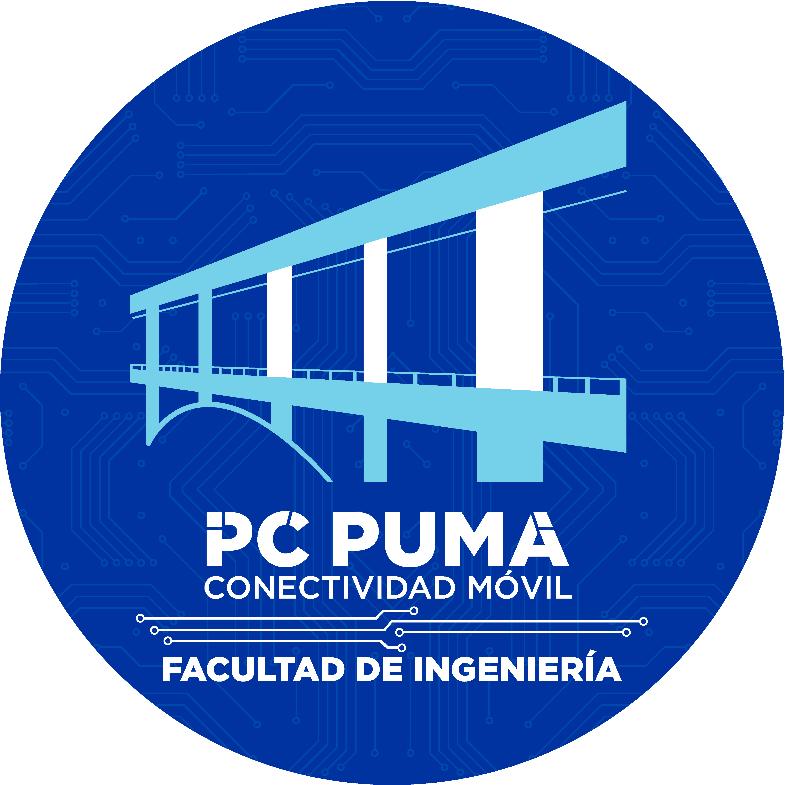
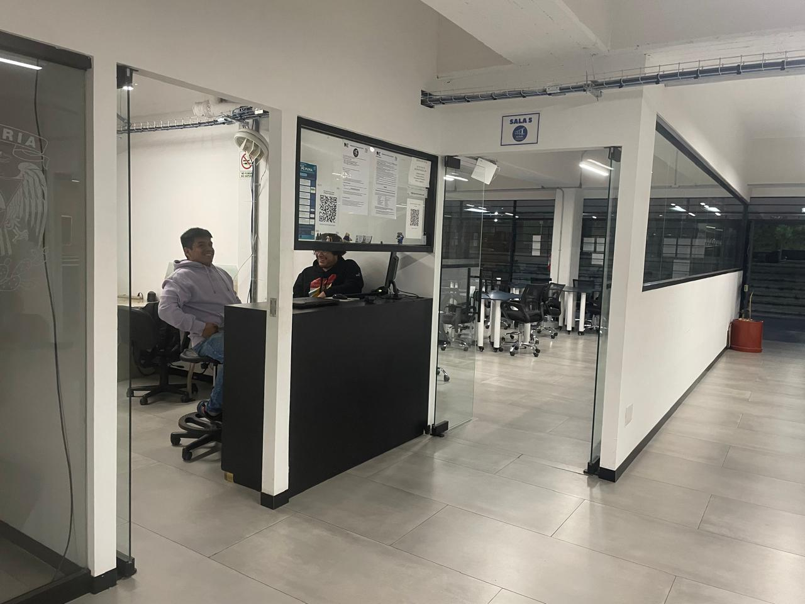
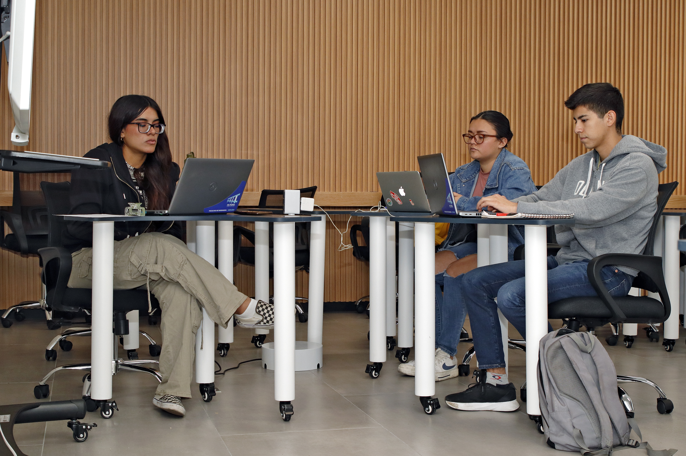
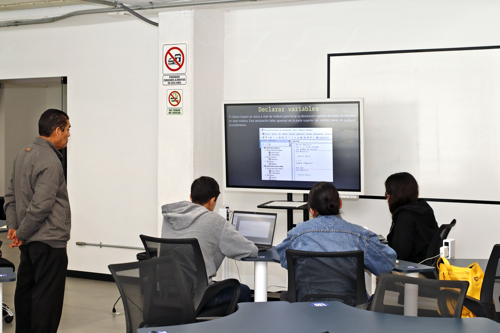
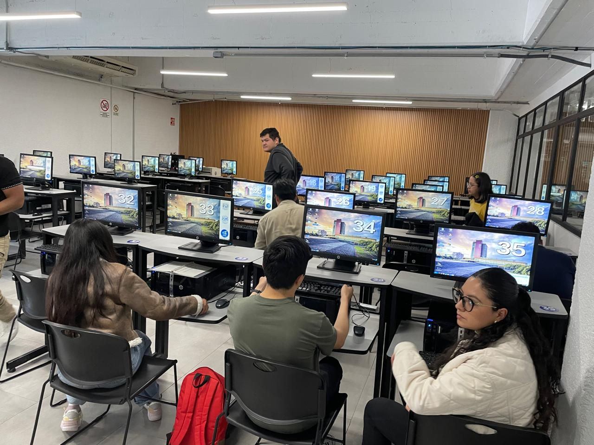

Préstamo de Equipos
- PCs con Linux Mint
- Laptops Ubuntu / Windows
- Espacios de trabajo individuales

Red inalámbrica de alta velocidad en todo el campus norte y sur.
Imprime tus documentos, tareas y proyectos directamente en los quioscos.
Ideal para presentaciones, trabajo en equipo y sesiones colaborativas.
Salas con pizarrones, mesas modulares y conexión WiFi abierta.
Asesorías, cursos intersemestrales y capacitación en herramientas digitales.



